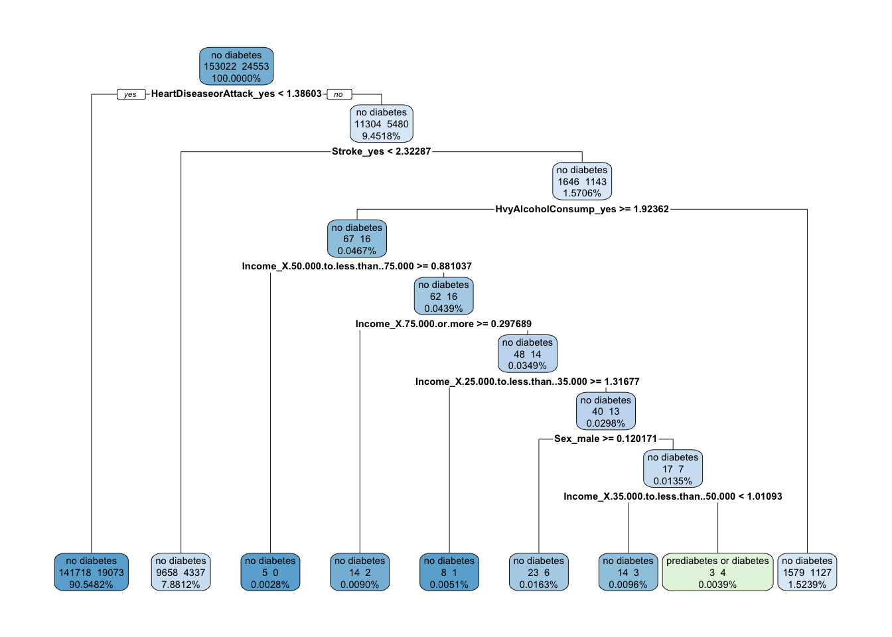

Write an intro! We will include (at least) 5 predictors in this model: (ORIGINALS! age, sex, income, smoker, and heart disease or attack) sex, income, stroke, heart disease or attack, and heavy alcohol consumption.
We will load the libraries and read in the data here:
library(baguette)
Loading required package: parsnip
library(corrplot)
corrplot 0.95 loaded
library(ggplot2)library(glmnet)
Loading required package: Matrix
Loaded glmnet 4.1-8
library(lubridate)
Attaching package: 'lubridate'
The following objects are masked from 'package:base':
date, intersect, setdiff, union
── Conflicts ────────────────────────────────────────── tidyverse_conflicts() ──
✖ readr::col_factor() masks scales::col_factor()
✖ purrr::discard() masks scales::discard()
✖ tidyr::expand() masks Matrix::expand()
✖ dplyr::filter() masks stats::filter()
✖ recipes::fixed() masks stringr::fixed()
✖ dplyr::lag() masks stats::lag()
✖ tidyr::pack() masks Matrix::pack()
✖ readr::spec() masks yardstick::spec()
✖ tidyr::unpack() masks Matrix::unpack()
ℹ Use the conflicted package (<http://conflicted.r-lib.org/>) to force all conflicts to become errors
library(vip)
Attaching package: 'vip'
The following object is masked from 'package:utils':
vi
library(vroom)
Attaching package: 'vroom'
The following objects are masked from 'package:readr':
as.col_spec, col_character, col_date, col_datetime, col_double,
col_factor, col_guess, col_integer, col_logical, col_number,
col_skip, col_time, cols, cols_condense, cols_only, date_names,
date_names_lang, date_names_langs, default_locale, fwf_cols,
fwf_empty, fwf_positions, fwf_widths, locale, output_column,
problems, spec
The following object is masked from 'package:yardstick':
spec
The following object is masked from 'package:scales':
col_factor
#diabetes_binary_health_indicators_BRFSS2015.csv#dbhi = diabetes binary health indicatorsdata <-read_csv("diabetes_binary_health_indicators_BRFSS2015.csv")
Rows: 253680 Columns: 22
── Column specification ────────────────────────────────────────────────────────
Delimiter: ","
dbl (22): Diabetes_binary, HighBP, HighChol, CholCheck, BMI, Smoker, Stroke,...
ℹ Use `spec()` to retrieve the full column specification for this data.
ℹ Specify the column types or set `show_col_types = FALSE` to quiet this message.
Next, we will convert variables to factor variables, where appropriate:
data <- data |>mutate(Diabetes_binary=factor(Diabetes_binary,levels=c("0","1"),labels=c("no diabetes","prediabetes or diabetes")),HighBP=factor(HighBP,levels=c("0","1"),labels=c("no high BP","high BP")),HighChol=factor(HighChol,levels=c("0","1"),labels=c("no high cholesterol","high cholesterol")),CholCheck=factor(CholCheck,levels=c("0","1"),labels=c("no cholesterol check in 5 years","yes cholesterol check in 5 years")),#BMI=factor(BMI),Smoker=factor(Smoker,levels=c("0","1"),labels=c("no","yes")),Stroke=factor(Stroke,levels=c("0","1"),labels=c("no","yes")),HeartDiseaseorAttack=factor(HeartDiseaseorAttack,levels=c("0","1"),labels=c("no","yes")),PhysActivity=factor(PhysActivity,levels=c("0","1"),labels=c("no","yes")),Fruits=factor(Fruits,levels=c("0","1"),labels=c("no","yes")),Veggies=factor(Veggies,levels=c("0","1"),labels=c("no","yes")),HvyAlcoholConsump=factor(HvyAlcoholConsump,levels=c("0","1"),labels=c("no","yes")),AnyHealthcare=factor(AnyHealthcare,levels=c("0","1"),labels=c("no","yes")),NoDocbcCost=factor(NoDocbcCost,levels=c("0","1"),labels=c("no","yes")),GenHlth=factor(GenHlth,levels=c("1","2","3","4","5"),labels=c("excellent","very good","good","fair","poor")),#MentHlth=#factor(MentHlth),#PhysHlth=#factor(PhysHlth),DiffWalk=factor(DiffWalk,levels=c("0","1"),labels=c("no difficulty walking","yes difficulty walking")),Sex=factor(Sex,levels=c("0","1"),labels=c("female","male")),Age=factor(Age,levels=c("1","2","3","4","5","6","7","8","9","10","11","12","13"),labels=c("18 to 24","25 to 29","30 to 34","35 to 39","40 to 44","45 to 49","50 to 54","55 to 59","60 to 64","65 to 69","70 to 74","75 to 79","80 or older")),Education=factor(Education,levels=c("1","2","3","4","5","6"),labels=c("Never attended school or only kindergarten","Grades 1 through 8 (Elementary)","Grades 9 through 11 (Some high school)","Grade 12 or GED (High school graduate)","College 1 year to 3 years (Some college or technical school)","College 4 years or more (College graduate)")),Income=factor(Income,levels=c("1","2","3","4","5","6","7","8"),labels=c("Less than $10,000","$10,000 to less than $15,000","$15,000 to less than $20,000","$20,000 to less than $25,000","$25,000 to less than $35,000","$35,000 to less than $50,000","$50,000 to less than $75,000","$75,000 or more")) )
Now, subset the data to look at the 5 predictors:
dbhi_data <- data #|> # select(Diabetes_binary,Age,HeartDiseaseorAttack,Income,Sex,Smoker)dbhi_data
# A tibble: 253,680 × 22
Diabetes_binary HighBP HighChol CholCheck BMI Smoker Stroke
<fct> <fct> <fct> <fct> <dbl> <fct> <fct>
1 no diabetes high BP high choles… yes chol… 40 yes no
2 no diabetes no high BP no high cho… no chole… 25 yes no
3 no diabetes high BP high choles… yes chol… 28 no no
4 no diabetes high BP no high cho… yes chol… 27 no no
5 no diabetes high BP high choles… yes chol… 24 no no
6 no diabetes high BP high choles… yes chol… 25 yes no
7 no diabetes high BP no high cho… yes chol… 30 yes no
8 no diabetes high BP high choles… yes chol… 25 yes no
9 prediabetes or diabetes high BP high choles… yes chol… 30 yes no
10 no diabetes no high BP no high cho… yes chol… 24 no no
# ℹ 253,670 more rows
# ℹ 15 more variables: HeartDiseaseorAttack <fct>, PhysActivity <fct>,
# Fruits <fct>, Veggies <fct>, HvyAlcoholConsump <fct>, AnyHealthcare <fct>,
# NoDocbcCost <fct>, GenHlth <fct>, MentHlth <dbl>, PhysHlth <dbl>,
# DiffWalk <fct>, Sex <fct>, Age <fct>, Education <fct>, Income <fct>
Split the Data
Set the seed. Then, use functions from tidymodels to split the data into a training and test set (70/30 split). Then, use the strata argument to stratify the split on the Sex variable.
set.seed(11)dbhi_split <-initial_split(dbhi_data, prop =0.70, strata=Sex) #strata = argument goes in the parentheses, if neededdbhi_train <-training(dbhi_split)dbhi_test <-testing(dbhi_split)
We will consider two kinds of models: classification tree and random forest. We will …
Get a recipe. Then, standardize the numeric variables since their scales are pretty different. Finally, create dummy variables for the predictors since they need to be numeric (again).
#bystanders <- colnames(dbhi_data)[c(2:4,7:18,21)]#bystanders#dbhi_train#Diabetes_binary ~ Age + BMI + Income + Sex + Smoker#ORIGINALS: update_role(HighBP,HighChol,CholCheck,Stroke,HeartDiseaseorAttack,PhysActivity,Fruits,Veggies,HvyAlcoholConsump,AnyHealthcare,NoDocbcCost,GenHlth,MentHlth,PhysHlth,DiffWalk,Education,new_role = "bystander") dbhi_recipe <-recipe(Diabetes_binary ~ ., data = dbhi_train) |>update_role(Age,Smoker,BMI,HighBP,HighChol,CholCheck,PhysActivity,Fruits,Veggies,AnyHealthcare,NoDocbcCost,GenHlth,MentHlth,PhysHlth,DiffWalk,Education,new_role ="bystander") |>step_dummy(all_nominal_predictors()) |>step_normalize(all_numeric(), -all_outcomes()) #|># summary()# prep(training = dbhi_train) |># bake(dbhi_train)dbhi_recipe
• Centering and scaling for: all_numeric() and -all_outcomes()
Classification Tree
You should provide a thorough explanation of what a classification tree model is. Then you should fit a classification tree with varying values for the complexity parameter and choose the best model (based on 5 fold CV on the training set). Include at least 5 predictors in this model.
First, tell tidymodels that we are performing a classification task:
#Extract the workflow to better understand the structure of the plot!tree_final_model <-extract_workflow(tree_final_fit)#Plot!tree_final_model <- tree_final_model |>extract_fit_engine() |> rpart.plot::rpart.plot(roundint =FALSE,extra=101,digits=-6)

tree_final_model
$obj
n= 177575
node), split, n, loss, yval, (yprob)
* denotes terminal node
1) root 177575 24553 no diabetes (0.8617317 0.1382683)
2) HeartDiseaseorAttack_yes< 1.386034 160791 19073 no diabetes (0.8813802 0.1186198) *
3) HeartDiseaseorAttack_yes>=1.386034 16784 5480 no diabetes (0.6734986 0.3265014)
6) Stroke_yes< 2.322867 13995 4337 no diabetes (0.6901036 0.3098964) *
7) Stroke_yes>=2.322867 2789 1143 no diabetes (0.5901757 0.4098243)
14) HvyAlcoholConsump_yes>=1.923615 83 16 no diabetes (0.8072289 0.1927711)
28) Income_X.50.000.to.less.than..75.000>=0.8810366 5 0 no diabetes (1.0000000 0.0000000) *
29) Income_X.50.000.to.less.than..75.000< 0.8810366 78 16 no diabetes (0.7948718 0.2051282)
58) Income_X.75.000.or.more>=0.2976892 16 2 no diabetes (0.8750000 0.1250000) *
59) Income_X.75.000.or.more< 0.2976892 62 14 no diabetes (0.7741935 0.2258065)
118) Income_X.25.000.to.less.than..35.000>=1.316765 9 1 no diabetes (0.8888889 0.1111111) *
119) Income_X.25.000.to.less.than..35.000< 1.316765 53 13 no diabetes (0.7547170 0.2452830)
238) Sex_male>=0.120171 29 6 no diabetes (0.7931034 0.2068966) *
239) Sex_male< 0.120171 24 7 no diabetes (0.7083333 0.2916667)
478) Income_X.35.000.to.less.than..50.000< 1.010926 17 3 no diabetes (0.8235294 0.1764706) *
479) Income_X.35.000.to.less.than..50.000>=1.010926 7 3 prediabetes or diabetes (0.4285714 0.5714286) *
15) HvyAlcoholConsump_yes< 1.923615 2706 1127 no diabetes (0.5835181 0.4164819) *
$snipped.nodes
NULL
$xlim
[1] 0 1
$ylim
[1] 0 1
$x
[1] 0.23100161 0.04472613 0.41727710 0.15963341 0.67492078 0.38585713
[7] 0.27454070 0.49717357 0.38944799 0.60489915 0.50435527 0.70544303
[13] 0.61926256 0.79162349 0.73416985 0.84907714 0.96398442
$y
[1] 0.95861553 0.02628681 0.85266909 0.02628681 0.74672264 0.64077620
[7] 0.02628681 0.53482975 0.02628681 0.42888330 0.02628681 0.32293686
[13] 0.02628681 0.21699041 0.02628681 0.02628681 0.02628681
$branch.x
[,1] [,2] [,3] [,4] [,5] [,6] [,7]
x 0.2310016 0.04472613 0.4172771 0.1596334 0.6749208 0.3858571 0.2745407
NA 0.04472613 0.4172771 0.1596334 0.6749208 0.3858571 0.2745407
NA 0.23100161 0.2310016 0.4172771 0.4172771 0.6749208 0.3858571
[,8] [,9] [,10] [,11] [,12] [,13] [,14]
x 0.4971736 0.3894480 0.6048992 0.5043553 0.7054430 0.6192626 0.7916235
0.4971736 0.3894480 0.6048992 0.5043553 0.7054430 0.6192626 0.7916235
0.3858571 0.4971736 0.4971736 0.6048992 0.6048992 0.7054430 0.7054430
[,15] [,16] [,17]
x 0.7341698 0.8490771 0.9639844
0.7341698 0.8490771 0.9639844
0.7916235 0.7916235 0.6749208
$branch.y
[,1] [,2] [,3] [,4] [,5] [,6] [,7]
y 0.9997651 0.06743639 0.8938187 0.06743639 0.7878722 0.6819258 0.06743639
NA 0.91327376 0.9132738 0.80732732 0.8073273 0.7013809 0.59543442
NA 0.91327376 0.9132738 0.80732732 0.8073273 0.7013809 0.59543442
[,8] [,9] [,10] [,11] [,12] [,13] [,14]
y 0.5759793 0.06743639 0.4700329 0.06743639 0.3640864 0.06743639 0.2581400
0.5954344 0.48948798 0.4894880 0.38354153 0.3835415 0.27759509 0.2775951
0.5954344 0.48948798 0.4894880 0.38354153 0.3835415 0.27759509 0.2775951
[,15] [,16] [,17]
y 0.06743639 0.06743639 0.06743639
0.17164864 0.17164864 0.70138087
0.17164864 0.17164864 0.70138087
$labs
[1] "no diabetes\n153022 24553\n100.0000%"
[2] "no diabetes\n141718 19073\n90.5482%"
[3] "no diabetes\n11304 5480\n9.4518%"
[4] "no diabetes\n9658 4337\n7.8812%"
[5] "no diabetes\n1646 1143\n1.5706%"
[6] "no diabetes\n67 16\n0.0467%"
[7] "no diabetes\n5 0\n0.0028%"
[8] "no diabetes\n62 16\n0.0439%"
[9] "no diabetes\n14 2\n0.0090%"
[10] "no diabetes\n48 14\n0.0349%"
[11] "no diabetes\n8 1\n0.0051%"
[12] "no diabetes\n40 13\n0.0298%"
[13] "no diabetes\n23 6\n0.0163%"
[14] "no diabetes\n17 7\n0.0135%"
[15] "no diabetes\n14 3\n0.0096%"
[16] "prediabetes or diabetes\n3 4\n0.0039%"
[17] "no diabetes\n1579 1127\n1.5239%"
$cex
[1] 0.4625
$boxes
$boxes$x1
[1] 0.183660439 -0.002615046 0.376951032 0.121767869 0.637055236
[6] 0.347991591 0.236675157 0.459308026 0.351582444 0.567033608
[11] 0.466489731 0.667577484 0.581397019 0.753757950 0.696304306
[16] 0.777906774 0.926118881
$boxes$y1
[1] 0.930420747 -0.001907977 0.824474301 -0.001907977 0.718527855
[6] 0.612581409 -0.001907977 0.506634963 -0.001907977 0.400688517
[11] -0.001907977 0.294742071 -0.001907977 0.188795625 -0.001907977
[16] -0.001907977 -0.001907977
$boxes$x2
[1] 0.2783428 0.0920673 0.4576032 0.1974990 0.7127863 0.4237227 0.3124062
[8] 0.5350391 0.4273135 0.6427647 0.5422208 0.7433086 0.6571281 0.8294890
[15] 0.7720354 0.9202475 1.0018500
$boxes$y2
[1] 0.99976511 0.06743639 0.89381867 0.06743639 0.78787222 0.68192578
[7] 0.06743639 0.57597933 0.06743639 0.47003288 0.06743639 0.36408644
[13] 0.06743639 0.25813999 0.06743639 0.06743639 0.06743639
$split.labs
[1] ""
$split.cex
[1] 1 1 1 1 1 1 1 1 1 1 1 1 1 1 1 1 1
$split.box
$split.box$x1
[1] 0.1161793 NA 0.3483794 NA 0.5581954 0.2329999 NA
[8] 0.3786743 NA 0.4555495 NA 0.6339093 NA 0.6459569
[15] NA NA NA
$split.box$y1
[1] 0.9003190 NA 0.7943725 NA 0.6884261 0.5824796 NA
[8] 0.4765332 NA 0.3705867 NA 0.2646403 NA 0.1586938
[15] NA NA NA
$split.box$x2
[1] 0.3458239 NA 0.4861748 NA 0.7916462 0.5387144 NA
[8] 0.6156728 NA 0.7542488 NA 0.7769768 NA 0.9372901
[15] NA NA NA
$split.box$y2
[1] 0.9262286 NA 0.8202821 NA 0.7143357 0.6083892 NA
[8] 0.5024428 NA 0.3964963 NA 0.2905499 NA 0.1846034
[15] NA NA NA
Random Forest
You should provide a thorough explanation of what a random forest is and why we might use it (be sure to relate this to a basic classification tree). You should then fit a random forest model with varying values for the mtry parameter and choose the best model (based on 5 fold CV on the training set). Include at least 5 predictors in this model.
Final Model Selection
We will compare the best models from each of the approaches on the test set and declare an overall winner…
rf_final_wkf <- rf_wkf |>finalize_workflow(rf_best_params)rf_final_fit <- rf_final_wkf |>last_fit(dbhi_split, metrics =metric_set(mn_log_loss))#Investigate the random forest model#Refit to the entire data setrf_full_fit <- rf_final_wkf |>fit(dbhi_data)rf_full_fit
══ Workflow [trained] ══════════════════════════════════════════════════════════
Preprocessor: Recipe
Model: rand_forest()
── Preprocessor ────────────────────────────────────────────────────────────────
2 Recipe Steps
• step_dummy()
• step_normalize()
── Model ───────────────────────────────────────────────────────────────────────
Ranger result
Call:
ranger::ranger(x = maybe_data_frame(x), y = y, mtry = min_cols(~9L, x), importance = ~"impurity", num.threads = 1, verbose = FALSE, seed = sample.int(10^5, 1), probability = TRUE)
Type: Probability estimation
Number of trees: 500
Sample size: 253680
Number of independent variables: 11
Mtry: 9
Target node size: 10
Variable importance mode: impurity
Splitrule: gini
OOB prediction error (Brier s.): 0.1128596